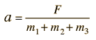

The force F is the only net force acting on the system of three masses, which are constrained to accelerate together. Therefore Newton's 2nd law gives the acceleration:

Once the acceleration is determined, the masses may be isolated one by one to determine the tensions T1 and T2.